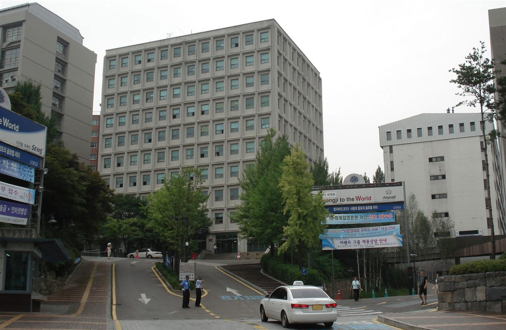

명지대학교는 서울 서대문구의 인문캠퍼스와 경기 용인시의 자연캠퍼스, 두 캠퍼스로 운영되는 수도권 사립대입니다. 인문·사회·경영 계열은 서울에서, 공학·자연·예체능 계열은 용인에서 수업이 이뤄집니다. 지원할 때는 학과가 어느 캠퍼스에 있는지를 먼저 확인해 두셔야 통학 계획이 어긋나지 않습니다.
2027학년도 명지대 수시는 한 문장으로 설명이 끝납니다. 모든 전형에 수능최저학력기준이 없고, 논술전형도 운영하지 않습니다. 14개 전형으로 2,000명대, 전체 모집인원의 약 70%를 수시에서 뽑는데, 그 전부가 학생부(교과·종합)와 실기·실적으로 결정됩니다. 수능 부담 없이 3년간의 학교 기록으로 승부하고 싶은 학생에게 가장 직관적인 학교 중 하나입니다. 원서접수(9월 7일 오전 10시 ~ 9월 11일 오후 5시)를 앞두고 전형별 핵심을 정리했습니다.
① 큰 그림 — 교과 두 갈래, 학종 두 갈래
일반 고3이 실제로 고르게 되는 문은 넷입니다. 학생부교과에서 학교장추천과 교과면접, 학생부종합에서 명지인재면접과 명지인재서류입니다. 이름이 비슷해 헷갈리지만, 기준을 하나씩 대 보면 금방 갈라집니다.
- 내신 등급으로만 → 학교장추천 (면접 없음)
- 내신 + 면접 → 교과면접 (1단계 교과로 거른 뒤 면접)
- 생기부 + 면접 → 명지인재면접
- 생기부만으로 → 명지인재서류 (면접 없음)
네 전형 모두 수능최저가 없습니다. 그러니 "내가 가진 것이 등급인가, 기록인가"와 "면접을 볼 것인가, 피할 것인가" 두 질문에만 답하면 지원할 전형이 정해집니다.
② 학교장추천 — 교과 100%, 그리고 지원 자격이 좁아졌습니다
학교장추천전형은 300명 가까이를 교과 성적 100%로 선발합니다. 비교과 반영도, 면접도, 수능최저도 없습니다. 명지대 수시에서 내신이 곧 결과인 가장 단순한 전형입니다.
올해 달라진 점이 하나 있습니다. 2025년 2월 이후 졸업(예정)자만 지원할 수 있습니다. 재수·삼수까지는 지원할 수 있지만, 그보다 앞서 졸업한 N수생은 이 전형에서 빠지게 됩니다. 재학생 입장에서는 경쟁 폭이 조금 정리된 셈이고, 반대로 그 전에 졸업했다면 교과면접이나 학종으로 방향을 돌려야 합니다.
학교장 추천이 필요한 전형이므로 우리 학교에 배정된 추천 인원과 교내 선정 기준을 담임 선생님께 먼저 확인하셔야 합니다. 등급이 되는데 추천을 못 받아 못 내는 경우가 해마다 있습니다.
③ 교과면접 — 1단계 5배수, 2단계 면접 30%
교과면접전형은 260명대를 뽑습니다. 1단계에서 교과 성적 100%로 모집인원의 5배수를 거르고, 2단계에서 1단계 성적 70% + 면접 30%로 최종 선발합니다. 면접은 지원한 모집단위에 대한 관심과 논리적으로 표현하는 능력을 봅니다. 면접일은 10월 31일입니다.
이 전형의 성격은 '5배수'에 있습니다. 문이 넓게 열리는 대신, 1단계를 통과한 다섯 명 중 한 명만 붙습니다. 그러니 내신이 학교장추천 커트라인에 살짝 못 미치는 학생이 면접으로 뒤집어 보는 자리로 읽으시면 됩니다. 반대로 내신이 확실히 강하다면, 면접 변수가 없는 학교장추천이 더 안전합니다.
④ 명지인재면접 vs 명지인재서류 — 같은 학종, 다른 결정 방식
명지대 학생부종합은 두 갈래입니다. 명지인재면접이 370명대, 명지인재서류가 360명대로 규모는 비슷하지만 방식이 다릅니다.
- 명지인재면접 — 1단계 서류평가로 면접 대상을 추린 뒤, 2단계 서류 70% + 면접 30%. 면접 평가 항목은 공동체역량 30% · 진로역량 40% · 발전가능성 30%입니다. 면접일은 자연 11월 28일, 인문 11월 29일로 캠퍼스별로 하루씩 나뉩니다.
- 명지인재서류 — 학생부 서류평가만으로 선발합니다. 면접이 없어 발표까지 추가로 준비할 것이 없습니다.
고르는 기준은 하나입니다. 내 생기부를 말로 설명할 자신이 있는가. 세특에 적힌 활동을 왜 했고 무엇을 배웠는지 자기 언어로 풀 수 있다면 면접형이 유리하고, 기록은 충실한데 말하기가 약하다면 서류형이 맞습니다. 한 학교에 두 장을 쓸 수 있는지, 쓴다면 그럴 가치가 있는지는 요강의 복수지원 규정과 다른 대학과의 균형을 보고 정하세요. 면접 평가에서 진로역량이 40%로 가장 크다는 점은 기억해 두실 만합니다. 면접형을 쓴다면 "왜 이 학과인가"에 대한 답이 가장 중요합니다.
⑤ 크리스천리더·기회균형·농어촌 — 자격이 되면 꼭 살펴볼 문
명지대에는 크리스천리더전형(50명대)이 있습니다. 기독교 정신을 바탕으로 세워진 학교라 학종 안에 별도 전형을 두고 있으며, 면접은 11월 27일입니다. 이 밖에 기회균형(60명)·농어촌학생(90명대)·사회적배려대상자·특수교육대상자 전형이 있고, 실기우수자(130명대)·특기자 전형도 운영합니다. 해당 자격이 있다면 일반 전형보다 경쟁 구도가 다르므로 먼저 검토하시기 바랍니다.
올해는 만학도·특성화고등졸재직자전형의 일부 모집단위에서 면접이 폐지되어 교과 100%로만 뽑고, 스포츠 관련 학과의 면접 비중은 20%에서 30%로 올라갔습니다. 특정 전공의 단계별 전형을 일괄 전형으로 단순화한 곳도 있어, 지난해 요강을 기준으로 준비했다면 모집단위별 전형방법을 다시 확인하셔야 합니다.
⑥ 학과 이름이 바뀌었습니다 — 입결을 볼 때 주의
2027학년도부터 AI경영정보학과, 컴퓨터AI응용공학부 등으로 학과 명칭이 개편되고 예술 계열 일부가 예술학부로 통합됩니다. 이름이 바뀐 학과는 지난해 입시 결과가 예전 이름으로 남아 있으니, 입결을 찾을 때 바뀌기 전 학과명으로 검색해야 비교가 됩니다. 통합된 학부는 모집단위가 커진 만큼 합격선이 새로 형성될 수 있다는 점도 감안하세요.
⑦ 지원 전 체크리스트
- 내신이 강하고 면접을 피하고 싶다면 → 학교장추천. 2025년 2월 이후 졸업(예정)자인지, 학교 추천을 받을 수 있는지부터 확인.
- 내신이 조금 아쉽고 말하기에 자신 있다면 → 교과면접. 5배수라 1단계 통과가 목표가 아니라 시작이라는 점을 기억.
- 생기부가 강하다면 → 명지인재면접(진로역량 40%) 또는 명지인재서류(면접 없음). 둘 다 쓸지는 6장 배분으로 결정.
- 캠퍼스 확인 → 인문 계열은 서울, 자연·공학·예체능은 용인. 면접일도 캠퍼스별로 다릅니다(자연 11/28, 인문 11/29).
- 학과명 개편 → 입결은 옛 학과명으로 찾기. 통합 학부는 첫해라는 점 감안.
- 공통 → 수능최저가 없으니 수능 성적으로 만회할 여지도 없습니다. 원서접수는 9월 7일 10:00 ~ 9월 11일 17:00, 합격자 발표는 12월 9일. 마감 당일 오후는 접속이 몰리니 하루 앞서 넣는 편이 안전합니다.
마무리 — '최저가 없다'는 말의 두 얼굴
수능최저가 없다는 건 수능이 약한 학생에게 분명한 기회입니다. 하지만 같은 이유로 지원자를 걸러 주는 장치도 없습니다. 최저가 있는 학교라면 최저를 못 맞춘 지원자가 자연스럽게 빠지지만, 명지대는 그 인원이 그대로 경쟁자로 남습니다. 그래서 명지대 지원은 "최저가 없어 편하다"가 아니라 "내신과 생기부, 그리고 면접 한 번으로 모든 것이 결정된다"고 읽는 편이 정확합니다.
고3이라면 지금 내 카드가 등급인지 기록인지 냉정하게 나눠 보시고, 고1·고2라면 명지대처럼 수능 없이 학생부만 보는 학교가 수도권에 적지 않다는 점을 기억해 두세요. 과목 선택과 세특, 그리고 학기마다의 내신이 그대로 지원 카드가 됩니다.
와와 학습코칭센터는 학생의 내신·생기부·모의고사 상황을 함께 놓고, 수시 6장을 어떤 전형으로 어떻게 나눌지 상담해 드립니다. 면접형과 서류형 중 어느 쪽이 우리 아이에게 맞는지도 실제 생기부를 보며 짚어 드립니다.
※ 본 글의 모집인원·전형방법·반영비율·일정은 명지대학교가 발표한 2027학년도 수시모집 계획과 이를 다룬 언론 보도를 바탕으로 정리한 것으로, 인원은 '260명대'처럼 대략의 규모로 표기했습니다. 학생부종합 1단계 선발 배수, 학생부 교과 반영 방법, 학과별 세부 조건과 추천 인원 배정 방식은 본 글에 담지 않았으므로 지원 전 반드시 명지대학교 입학처의 2027학년도 수시모집요강 원문에서 최종 확인하시기 바랍니다. 본 글은 학부모·학생의 이해를 돕기 위한 정리 자료입니다.